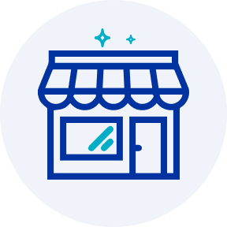

¿Cuál es la diferencia entre un siniestro y asistencia?
Sabemos que despues de un accidente, sea leve o grave, es posible que nuestras emociones se encuentren demasiado alteradas para pensar con claridad. Por eso, acá te explicamos lo que necesitas hacer para que estés informado en el caso que algún dia te suceda, y una de las primeras cosas que debes hacer es identificar si tu evento se clasifica como Asistencia o Siniestro.

Siniestro
Es un hecho que
supone daño a una persona o a un bien material.
Estos eventos imprevistos están declarados en la póliza y son
por los que responde Seguros SURA.
Ejemplos :
- Choque automovilístico
- Incendio del hogar
- Fallecimiento de una persona

Asistencia
Son beneficios adicionales que ofrece Seguros
SURA como ayuda,
a pesar de que no exista un siniestro.
Ejemplos:
- Servicio de grúa
- Servicio de cerrajería, plomería y electricidad
- Localización de maletas
¿Tuviste un siniestro? ¡Te ayudamos!
Una vez ocurrido el siniestro, debes anotar la mayor cantidad de datos que identifiquen a los involucrados y los hechos ocurridos (situación, robo, choque, etc). Luego debes realizar la denuncia online, disponible todos los días de la semana, las 24 horas del día.
Antecedentes

1.- Antecedentes
Recopila la mayor cantidad de antecedentes y fotos.
Denuncio

2.- Denuncio
Realiza la denuncia de tu siniestro a través de nuestros
canales de atención y llena el formulario con los datos
requeridos.
Taller

3.- Taller
Revisa tu correo electrónico, recibirás un mail con los
datos de tu liquidador y taller. Al ingresar tu auto,
recuerda dejar en la guantera el Padrón, copia Licencia
y una declaración jurada.
Evaluación

4.- Evaluación:
Espera el resultado de la inspección y cobertura.
Reparación

5. Reparación o Indemnización:
Recibe la determinación del caso, en la cual el
liquidador se pondrá en contacto para indemnizar al
beneficiario o coordinar la reparación del automóvil.
Entrega

6. Entrega
Solicita la fecha y hora de entrega de tu automóvil.
 Siniestro de Hogar
Siniestro de Hogar
Datos
1.- Datos
Ingresa al formulario de siniestros y rellena con tus
datos e información.
Inspeccion
2.- Inspección
Coordina la inspección del inmueble con tu liquidador
asignado.
Evaluación
4.- Evaluación:
Espera el resultado de la inspección y cobertura.
Reparación

5. Reparación o Indemnización:
Recibe la determinación del caso, en la cual el
liquidador se pondrá en contacto para indemnizar al
beneficiario o coordinar la reparación del inmueble.
Datos
1.- Datos
Ingresa al formulario de siniestros y rellena con tus
datos e información.
Evaluación
2.- Evaluación:
Espera el resultado de la inspección y cobertura.
Reparación
3. Reparación o Indemnización:
Recibe la determinación del caso, en la cual el
liquidador se pondrá en contacto para indemnizar al
beneficiario o coordinar la reparación del inmueble.
Datos
1.- Datos
Ingresa al formulario de siniestros y rellena con tus
datos e información.
Evaluación
2.- Evaluación:
Espera el resultado de la inspección y cobertura.
Reparación

3. Reparación o Indemnización:
Recibe la determinación del caso, en la cual el
liquidador se pondrá en contacto para indemnizar al
beneficiario o coordinar la reparación del inmueble.
¿Cómo funciona el Deducible?
El deducible corresponde al valor que tendrás que asumir como
asegurado cuando tengas algún accidente y decidas usar tu
seguro. Este valor, lo eliges tú al contratar un plan y
corresponde al valor que tendrás que pagar cuando actives la
cobertura que te otorga la compañía. Todo lo que supere el
deducible es cubierto por la póliza.
Esto puede hacer variar el
valor de tu cuota mensual (valor UF), ya que mientras menor sea
tu deducible, mayor será la mensualidad, debido a que en caso de
siniestro la compañía asumirá la mayor parte de los gastos.
Estado de denuncias de siniestros
Para revisar el estado de tus siniestros puedes entrar a tu sitio privado Soy Cliente Seguros SURA y ver el detalle de estos.
IR A MI SITIO PRIVADODetalles del seguro
Coberturas base


Incendio estructural y contenido
Cubre el deterioro que sufran los bienes asegurados por la acción directa e inmediata de un incendio, como también los daños causados por calor, humo y vapor. Se aplicará el deducible contratado.

Incendio / Sismo en mercadería
Cubre los daños a la mercadería (productos e insumos) causados por incendios o sismos.
Ármalo como tu quieras con las coberturas opcionales
Robo
Cubre hasta UF 2.000 de suma asegurada, deducible de 10% de la pérdida con un mínimo de UF 10, en toda y cada pérdida.
Accidentes personales
Cubre hasta UF 1.500 de suma asegurada, sin deducible.
Enfermedades grandes
Cubre hasta UF 1.000 de suma asegurada, sin deducible.
Remesa de valores
Cubre hasta UF 100 de suma asegurada, deducible de 10% de la pérdida con un mínimo de UF 15, en toda y cada pérdida.
Equipo electrónico
Cubre hasta UF 1.000 de suma asegurada, deducible de 10% de la pérdida con un mínimo de UF 10, en toda y cada pérdida.
Dinero en caja de seguridad
Cubre hasta UF 300 de suma asegurada, deducible de 10% de la pérdida con un mínimo de UF 15, en toda y cada pérdida.
Terrorismo
Deducible 10% de la pérdida con mínimo de UF 75 en toda y cada pérdida.
Responsabilidad Civil
RC Propietario Inmueble, RC Patronal y RC por Intoxicación. Cubre UF 2.000 de suma asegurada y aplica un deducible del 10% de la pérdida con un mínimo de UF 10 en toda y cada pérdida.
Rotura de cristales
Cubre hasta UF 500 de suma asegurada, deducible de UF 2.- aplicable en toda y cada pérdida. Para Termo paneles o Vidrios templados superior a 10 mt² aplica un deducible del 10% de la pérdida con mínimo UF 5 en todo y cada evento.
Avería de maquinaria
Cubre hasta UF 2.000 de suma asegurada, deducible de 10% de la pérdida con un mínimo de UF 10, en toda y cada pérdida.
Perjuicio por Paralización
Deducible según contratación 5 o 7 días, con periodo indemnizable por 3 o 6 meses. Esta cobertura no se considera como Sublimite, corresponde a Monto Asegurado. Cubre hasta UF 2.000 de suma asegurada.
No cubre
A menos que existan en las Condiciones Particulares de la póliza, quedan excluidos del presente seguro los siguientes riesgos:

Combustión espontánea: entendiendo por tal la reacción química que genera más calor que el mismo objeto puede liberar, provocando su auto-ignición.
Incendios: cualquiera fuere su causa u origen, producidos durante o inmediatamente después de sismos que tengan una intensidad promedio, en la comuna respectiva, de grado 6 o superior en la Escala de Mercalli según lo indique el Servicio de Sismología del Departamento de Geología y Geofísica de la Universidad de Chile o el organismo que lo reemplace.. Los incendios deberán ocurrir inmediatamente dentro de las 3 horas siguientes al sismo.
Incendios por sismos: que tuvieran origen o fuesen consecuencia de sismos de una intensidad inferior a los 6 grados en la Escala de Mercalli según lo señale el Servicio de Sismología del Departamento de Geología y Geofísica de la Universidad de Chile o el organismo que lo reemplace.
Las exclusiones a las cuales está sujeta cada cobertura, debe leer detalladamente las Condiciones Generales, inscritas en la Comisión para el Mercado Financiero bajo el Código POL120160248. Éstas se encuentran disponibles en el sitio web de la Comisión para el Mercado Financiero, www.cmfchile.cl en la siguiente sección (Mercado de Seguros / Depósito de Pólizas).
Asistencias
Con tu Seguro PYME podrás tener estas asistencias las 24 horas del día los 7 días a la semana:
Servicio de reparación:
plomería, cerrajería, vidriería
y electricidad
Hasta UF 3 por evento, 3 eventos al año.
Traslado médico de urgencia
Hasta UF 10 por evento, 4 eventos al año.
Flete de urgencia
Hasta 20 Km por evento, 2 eventos al año.
S.O.S Automóvil:
Remolque, puente de batería, cambio de
batería, cambio de neumático, cerrajería automotriz,
mecánica ligera, envío de combustible.
Hasta UF 3 por evento, 3 eventos al año.
Servicio
Aló Mecánico
Ilimitado, sin tope
Limpieza de vidrios
3 eventos con tope de 10 metros lineales.
Limpieza de campanas de cocina
Ilimitado, precio preferencial.
Orientación:
Comercial, legal telefónica, contable, tributaria, en beneficios gubernamentales y tecnología e informática. Ilimitado, sin tope por evento.
Personal de reemplazo
Por licencia médica, 1 evento, tope por conexión.
Servicios de salud
Para socios y funcionarios.
Urgencia dental
4 Eventos sin tope.
Orientación médica telefónica
Médicos disponibles 24/7, en atención geriátrica, pediátrica, nutricional y asistencia control.
Medicamentos
Ilimitado, sin tope
Preguntas frecuentes
¿Cuales son los requisitos para contratar Seguro PYME?
Tu pyme debe encontrarse en zonas no restringidas. No podrás contratar si tu pyme se encuentra en zonas de actos maliciosos y en conflicto étnico: comunas de Tirúa, Santa Bárbara, Quilaco, Mulchén, Collipulli, Ercilla, Victoria, Traiguén, Galvarino, Lumaco, Purén; ni sectores con antecedentes de inundación en los últimos años ni de riesgos ubicados dentro de reservas o parques nacionales.
¿A quién cubre este seguro?
El seguro cubre la propiedad y contenido en caso de incendio , sismo.
¿Cubre daños por robo?
En la declaración de contratación debes indicar condiciones de seguridad, con ello tendrás acceso al paquete base de la cobertura de robo y puedes tener acceso a adicionales: dinero en caja de seguridad y remesa de valores.
¿Una persona natural puede cotizar PYME?
SÍ, siempre y cuando tenga iniciación de actividades ante el Servicio de Impuestos Internos (SII) y que además tenga actividad comercial en la ubicación del riesgo.
¿Puedo asegurar un riesgo donde existe comercio y casa habitación (primer piso comercial y segundo piso habitacional)?
Sí, en ese caso debes declarar ambas sumas aseguradas; comercial y habitacional para que el riesgo sea considerado de manera integral.